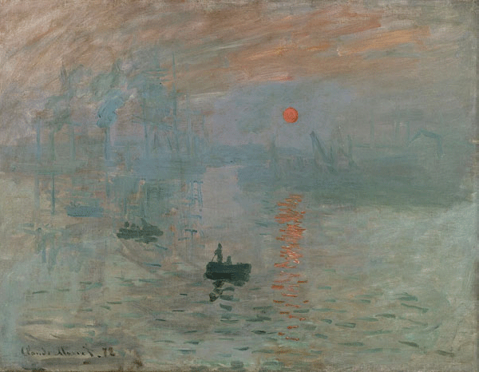
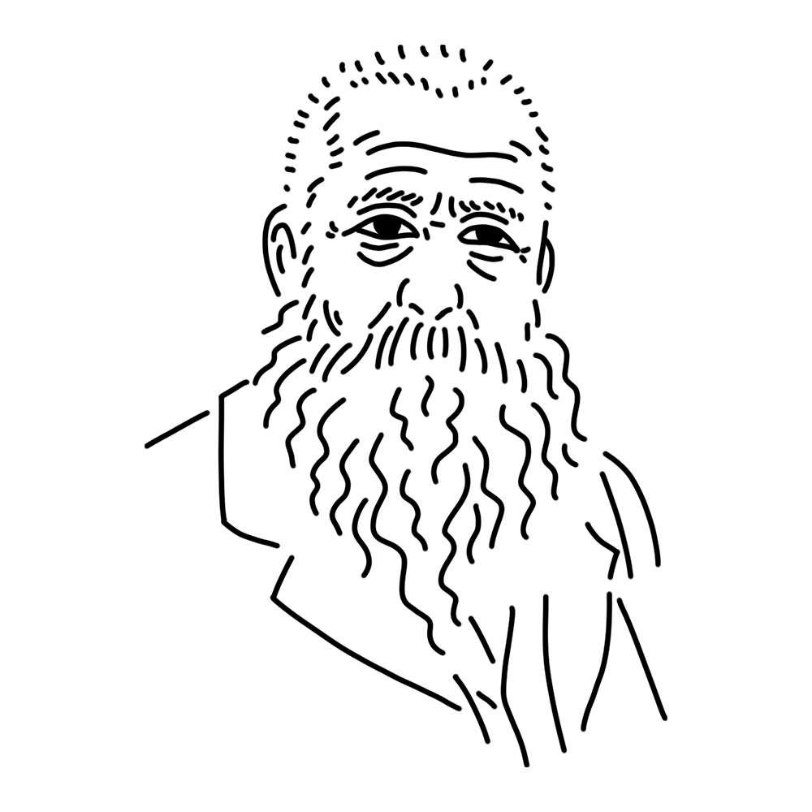

グループの命名にも関係がある、印象派を代表するミューズ。おっとりとした平和な性格だが、時折見せる芸術への探究心は鬼気迫るものがある。広大な庭と池の手入れが何よりの趣味。
フランス王国
"印象・日の出"
"散歩、日傘をさす女"
"睡蓮" etc.

「印象派」というグループ名の由来になったともいわれるモネの代表作。フランス北西部、ル・アーヴルの港の景色を荒い筆さばきで描いたもので「作りかけの壁紙のほうがまだマシ」という批評はあまりにも有名。発表後しばらくの評判も芳しくなく、傑作とみなされたのは印象派が世間に認められてしばらくたってから。
制作年
1872年
技法・材質
油彩、カンヴァス
寸法
48 cm x 63 cm
所蔵
マルモッタン・モネ美術館（フランス）

印象派、ひいてはフランスの近代美術を代表する画家。光と大気の移ろい、水面のゆらぎを筆でとらえることに着目し『印象・日の出』や『睡蓮』など美しい作品を作り出した。優しい光に包まれたような画風は広く愛されているがその人生は決して順風満帆ではなく、苦難の中で現代美術を探求し続けた苦労の画家でもある。フランス・ジヴェルニーにはモネの終の棲家と庭園が残っており、モネが愛した睡蓮の花を見ることができる。
Oscar-Claude Monet
1840年11月14日
1926年12月5日(86歳没)